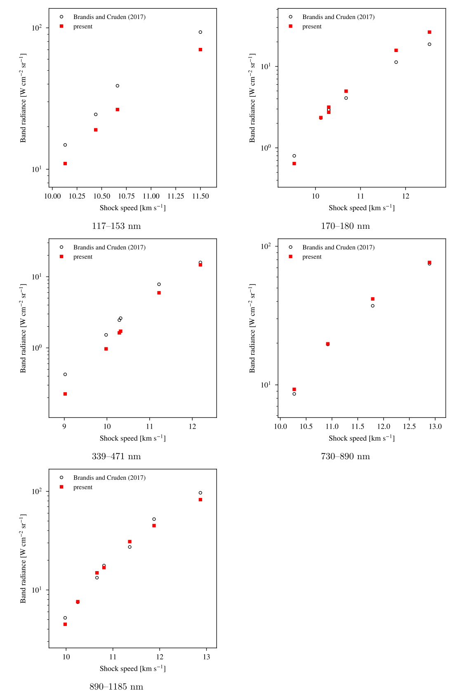
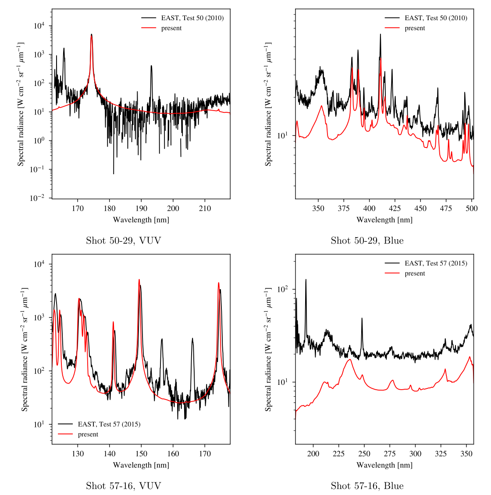
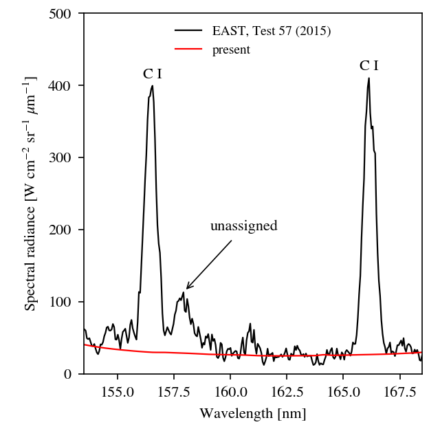
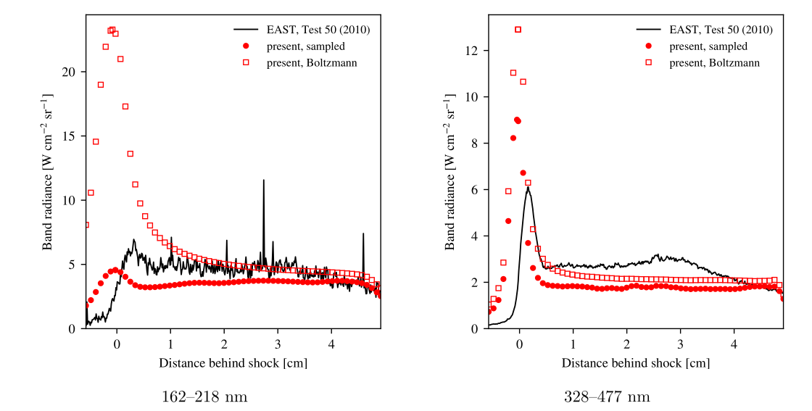

EAST radiance validation
The November 2026 benchmark compares a corrected radiationFoam calculation with the calibrated EAST measurements. The uniform equilibrium columns test the spectrum and instrument response at a prescribed gas state. A separate calculation uses the spatially varying DSMC state of shot 50-29.
Equilibrium columns
The 50 decks comprise 26 benchmark columns, four full camera spectra and 20 species diagnostics. The five windows contain 28 shot–camera pairs from 24 different shots at 0.2 Torr. Each entry below is the geometric mean of the predicted radiance divided by the measured radiance over the shots in that window. The range gives the smallest and largest corrected ratios. The nominal 170–180 nm band ends at 178 nm for the Test 57 VUV camera.
Wavelength (nm) |
Pairs |
Baseline |
Corrected |
Corrected range |
|---|---|---|---|---|
117–153 |
4 |
0.785 |
0.736 |
0.679–0.778 |
170–180 |
7 |
1.229 |
1.101 |
0.804–1.410 |
339–471 |
6 |
0.685 |
0.685 |
0.532–0.926 |
730–890 |
4 |
1.064 |
1.057 |
1.010–1.121 |
890–1185 |
7 |
0.965 |
0.964 |
0.852–1.133 |


Measured and calculated equilibrium band radiance versus shock speed. Each pair of points refers to the same shot and camera window.
The baseline reproduced all 236 archived output files from revision
f151155. Both builds used the same equilibrium states and detector
response. The corrected build uses the published Whiting wing term, a
consistent integration grid and molecular collision-partner masses in
atomic mass units. See Line shapes and broadening.
For the equilibrium spectra, integrating on common camera coverage gives 3.288 versus 4.814 W cm−2 sr−1 for shot 50-29 (162–218 nm), and 13.478 versus 17.750 for shot 57-16 (122–178 nm). In the 159.5–164 nm gap of shot 57-16, the predicted mean spectral radiance changes from 28.15 to 25.70, against 29.78 W cm−2 sr−1 µm−1 measured. The correction reduces the mean excess at 170–180 nm and increases the deficit in the deep VUV.


Spectral radiance at the EAST camera pixels. In the Blue camera the corrected equilibrium model gives 0.666 of the measured 339–471 nm integral for 50-29 and 0.427 of the 190–350 nm integral for 57-16.
Pixel spectra (compressed CSV),
Per-shot radiances,
window summaries,
VUV spectra integrals,
UV/Vis spectra integrals,
VUV floor measurements.
Shot 57-16 VUV peaks
The calibrated camera records maxima at 156.55 and 166.13 nm. Their positions, after accounting for the wavelength offset visible in the nitrogen multiplets, match the neutral carbon (C I) multiplets at 156.1 and 165.7 nm. The equilibrium air calculation omits carbon. At the two measured peak pixels, EAST gives 399.5 and 410.1 versus 30.0 and 26.9 W cm−2 sr−1 µm−1 calculated. The neighbouring nitrogen peak is present in both spectra at 149.70 nm measured and 149.37 nm calculated. A weaker measured feature at 157.92 nm reaches 113 in EAST and 29 in the calculated spectrum in the same units. Its carrier remains unassigned.


Spectral radiance across the two carbon multiplets on the original detector wavelength scale. The comparison includes all measured pixels in this interval.
Brandis, Johnston and Cruden report 0.04 mol% CO₂ in the Test 57 fill. A
separate uniform equilibrium carbon slab at this abundance predicts carbon
contributions of 0.233 and 0.534 W cm−2 sr−1 inside
155.83–157.12 and 165.45–166.82 nm. The measured excesses above the air
calculation are 0.247 and 0.244 in the same units. The uniform slab accounts
for 94% of the first excess and 219% of the second. See the carbon
calculation,
the EAST fill composition
and the NIST neutral-carbon wavelengths.
Extended Tests 50 and 57
An additional 104 equilibrium columns cover 44 shots from Tests 50 and 57. They use the recorded fill pressure and shock speed for each shot and the representative camera responses used in the campaign analysis. Integrating the investigators’ released equilibrium spectra yields 127 measured band comparisons. The VUV spectra of 50-92 and 50-99 contain missing pixels in the 170–178 nm window, so their measured integrals are unavailable.
For the 26 shots at or above 10 km/s with complete 170–178 nm measurements, a least-squares fit of log(predicted/measured) to shock speed, with a separate intercept for each of four calibration periods, gives a slope of 0.310 ± 0.076 per km/s. Omitting the three shots previously flagged in the campaign analysis (50-32, 57-21 and 57-43) gives 0.098 ± 0.053 per km/s over 23 shots. These are regression standard errors. The inferred dependence on speed is sensitive to shot selection.
Test 50 band radiances,
Test 57 band radiances,
regressions by calibration period.
DSMC production comparison for shot 50-29
The shock speed was 10.29 km/s in a 79% nitrogen and 21% oxygen mixture at 0.2 Torr. dsmcFoam+ accumulated ten 10 µs blocks from 150 to 250 µs. radiationFoam evaluated every tenth cell in the radiation zone (958 of 9,580 cells), using the time-averaged sampled populations and a second reconstruction from the internal temperatures. Both calculations used the same DSMC realisation, species densities, slab geometry and detector response. Replaying the Boltzmann populations in six cells reproduced the emission coefficient byte for byte in both windows.
The table gives band radiances in W cm−2 sr−1. The downstream values average the profile from 3 to 4.5 cm. The near-front values integrate it from -0.576 to 2.000 cm and divide by the 10.16 cm tube diameter. The computed origin is the density half-rise. Each measurement uses the half-rise of its smoothed camera-band radiance. The upstream limit is the first sampled DSMC cell. Brandis and Cruden integrate a full four centimetres about a radiance peak, or the inflection point for a profile without overshoot. The shorter interval here permits a direct comparison of the three profiles on their shared coverage.
Nominal band |
Position |
Sampled |
Boltzmann |
EAST |
|---|---|---|---|---|
162–218 nm |
Downstream |
3.663 |
4.432 |
4.193 |
328–477 nm |
Downstream |
1.734 |
2.084 |
2.338 |
162–218 nm |
Near front |
0.887 |
2.641 |
1.048 |
328–477 nm |
Near front |
0.662 |
0.924 |
0.639 |


Shot 50-29 camera-band profiles aligned to their respective half-rise. The downstream average spans 3–4.5 cm. The last measured VUV pixel lies at 217.958 nm.
Downstream, the sampled populations give 0.87 of the measured VUV radiance and 0.74 of the measured UV/Vis radiance. The Boltzmann reconstruction gives 1.06 and 0.89, respectively. Over the shared near-front interval, the sampled and Boltzmann VUV integrals are 0.85 and 2.52 times EAST. In the UV/Vis those ratios are 1.04 and 1.45. At the 17 downstream diagnostic positions, the median sampled-to-Boltzmann population ratio is 1.04 for the upper term of the 174.3 nm nitrogen multiplet and 0.54 for the B state of the nitrogen molecular ion. The sampled C state of molecular nitrogen is empty at all 17 positions and the A state of nitric oxide is empty at 16. The empty groups limit what this single realisation can establish about the least populated emitters.
Six-band radiances and integration bounds,
profiles of the two cameras,
spectra at 0.3 cm, 1 cm and 3–4.5 cm (compressed CSV),
populations at 64 positions,
definitions of the emitting groups.
Verification
All 375 comparisons between the expanded and short inputs passed. The suite reproduced 26 reference files. The instrument passed 53 checks. The largest relative difference from the independent atomic-line calculation across 16 ion cases was 1.54 × 10−10 at points above 0.1% of the peak. An independent integration of the six production bands reproduced all 54 spatial statistics at the precision of the archived tables.
Sources
Brandis and Cruden (2017), Benchmark Shock Tube Experiments of Radiative Heating Relevant to Earth Re-entry.
Whiting (1968), An empirical approximation to the Voigt profile.